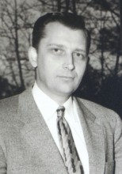

Please note: the AAS Obituaries are temporarily being hosted on this website while their full content is being ingested into the PubPub publishing platform newly adopted by the Bulletin of the American Astronomical Society. When the migration is complete, your existing links will take you to the final, migrated content. Contact peter.williams@aas.org with any questions.
Albert G. Wilson (1918-2012)
Albert George Wilson supervised the National Geographic Society-Palomar Observatory Sky Survey, directed the Lowell Observatory, and was the founding co-editor of Icarus. His discoveries included four dwarf galaxies in the Local Group, several supernovae, a comet, and at least five asteroids. His main interest, however, was theoretical cosmology, especially the idea of discretization.
The son of oil company geologist Arthur Rector Wilson and homemaker and writer Hazel Mildred Straw, Wilson was born in Houston, Texas on 28 July 1918, grew up in Denver, Colorado, and moved back to Houston with his family when he finished high school. He had decided at age five that he wanted to be an astronomer, but he attended Rice Institute (now University) in Houston, where he asked the president why there was no astronomy and was told that the damp, cloudy climate precluded it.
Upon receiving his B.S. in electrical engineering in 1941, he entered graduate school at the California Institute of Technology—another institution that did not offer any astronomy—in mathematics. His graduate work was interrupted by two years in the U.S. Navy, installing radar on ships. He returned to Caltech to submit his thesis in 1947 on an applied mathematics problem dealing with the spread of heat after a major impact. At this time he became a senior research fellow at Caltech and began work with Fritz Zwicky on the search for supernovae with the 18-inch Schmidt telescope. He would always feel close to Zwicky and his “morphological” approach to science.
In 1948 Jesse Greenstein came to Caltech and founded the program in astronomy. Wilson, a staff member of both Caltech and the Mt. Wilson and Palomar Observatories from 1949–1953, helped organize the astrophysics library and taught both undergraduate and graduate courses. He taught practical astronomy to graduate students, including Helmut Abt and Allan Sandage. He was put in charge of observations for the National Geographical Society-Palomar Observatory Sky Survey, working under Ira S. Bowen. It was during this period that he and R.G. Harrington discovered Leo I and Leo II. Later, Wilson announced the discoveries of two more local group galaxies, the Draco and Ursa Minor Dwarfs. During this period Wilson began writing popular articles for such publications as Scientific American and National Geographic.
Roger Lowell Putnam, sole trustee of Lowell Observatory, acting on the recommendation of astronomer John C. Duncan, approached Al Wilson about becoming director of the venerable institution. It had been moribund for decades with three aging staff members, director V.M.Slipher, his brother E.C. Slipher, and C.O. Lampland, dominating but doing little research. Lampland had died in 1951 and V.M. was ready to retire. Wilson was hired as assistant director effective 1 July 1953 with the understanding that if all went well V.M. would retire and Wilson would succeed him after a year.
Wilson served as director of Lowell Observatory from 11 November 1954 to 3 January 1957. It did not go well. There was a rebellion by the younger staff members, especially Harold Johnson and Henry Giclas, which led to his early resignation. Half a century later, Wilson recalled gratefully that his successor, John S. Hall, thanked him for doing much of the necessary “dirty work” to modernize the historic observatory.
Despite constant battles with the staff, Wilson achieved quite a bit during his short tenure at Lowell. He hosted the first ever “Astrobiology Seminar” and began plans for a meeting of the Astronomical Society of the Pacific, began a survey for a new dark sky site, initiated seminar and guest investigator programs, and obtained outside support for several programs, including observations of a Mars opposition from South Africa and an eclipse from Sri Lanka. He also joined with Russell Morgan and Ralph Sturm of Johns Hopkins University to test their electronic image-orthicon intensifier, developed for medical uses, on planetary photography. He became interested in—and wrote about—Mars, astrobiology, and scintillation layers in the Earth’s atmosphere. He served on the Council of the American Astronomical Society and the Board of Trustees of the Astronomical Society of the Pacific, both from 1955 to 1958.
Returning to southern California, Wilson worked as a senior member of the research staff at the Rand Corporation from 1957–1966. His work was supported by the U.S. Air Force, and he had plenty of time for his own research, which was in galaxies and cosmology. One of the visitors there was Zdenek Kopal, who wanted to start a journal of solar system studies, so the two of them founded Icarus in 1962 and jointly edited it for its first six years, after which they turned it over to Carl Sagan.
It was at Rand that Wilson met mathematician Dominic G.B. Edelen, who shared his interest in the idea of discretization (now it would probably be called quantization) in astronomy. The two wrote several articles and a book together on the subject before and after Edelen went off to become a professor at Lehigh University. Their ideas have received little support.
In 1966, Wilson became associate director of the Douglas Advanced Research Laboratories. At Wilson’s instigation, the labs sponsored a 1968 symposium on Hierarchical Structures, the proceedings of which were edited by Lancelot Law Whyte, Wilson, and Wilson’s wife Donna.
Wilson retired from Douglas in 1972 rather than move to St. Louis after the McDonnell-Douglas merger. He then taught astronomy and philosophy of science, including such courses as “Math, Myth, and Metaphor” as an adjunct professor at the University of Southern California and the University of California, Los Angeles.
Wilson was married to Frances Malich from 1940 to 1957. They had four children. In 1961 he married Donna Scott, an editor and writer who coauthored some of his writings until her death in 1998.
Wilson spent his last 25 years studying Buddhist philosophy in Sebastopol, California, where he died 27 August 2012. He noted that he had three things in common with Percival Lowell: both were primarily mathematicians, and both had interests in astronomy and in Eastern philosophy.
Selected References
Edelin, Dominic G.B. and Albert G. Wilson (1970). Relativity and the Question of Discretization in Astronomy. New York: Springer-Verlag.
Tenn, Joseph S. (2007). “Lowell Observatory Enters the Twentieth Century—in the 1950s.” Journal of Astronomical History and Heritage 10:65-71.
Whyte, Lancelot Law, Albert G. Wilson, and Donna Wilson, eds. (1969). Hierarchical Structures. New York: American Elsevier.
Wilson, Albert G. (1964). “Discretized structure in the distribution of clusters of galaxies.” Proceedings of the National Academy of Sciences 52: 847–854.
Photo credit: Lowell Observatory Archives
This obituary is based on the author’s entry on Wilson for the Biographical Encyclopedia of Astronomers (Thomas Hockey, ed.; Springer publishers)
Obituary written by: Joseph S. Tenn (Sonoma State Univ.)
BAAS Citation: BAAS, 2012, 44, 017